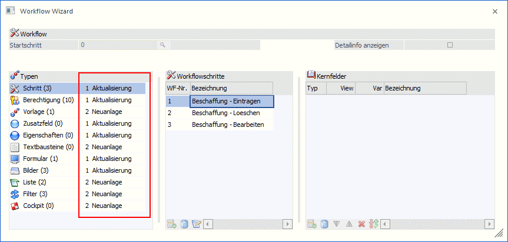
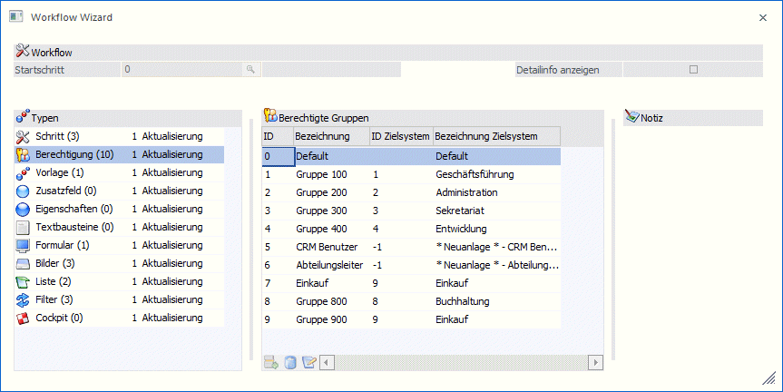
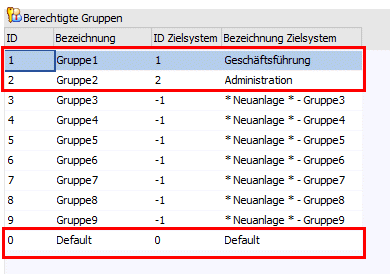
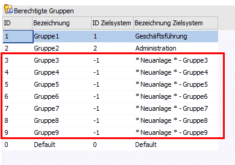
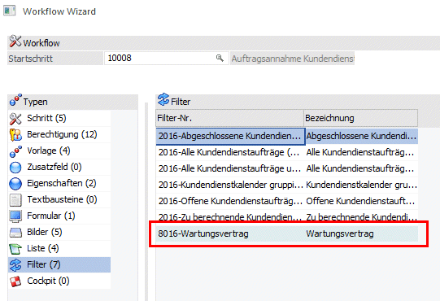
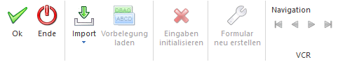

Im Modus "Import" können Workflows inkl. zugehöriger Objekte importiert werden.
Hinweis
Der Import von Workflows ist nur mit jenen XML-Dateien möglich, die in einer WinLine Version ab WinLine Edition 2022 - Version 12 exportiert wurden.
Dabei kann entschieden werden, ob bereits vorhandene Objekte mit den zu importierenden Objekten aktualisiert werden sollen, oder ob die zu importierenden Objekte neu erstellt werden sollen.

Der "Abgleich" ob bereits entsprechende Objekte vorhanden sind, erfolgt über eine eindeutige GUID.
Der Importablauf wird gestartet, indem der Button "Import" gewählt wird. Dadurch öffnet sich der "Datei-such"-Dialog und es muss die zu importierende XML-Datei gewählt werden. Die Daten werden im Menüpunkt eingelesen und die weiteren Definitionen können erfolgen.
Ø Startschritt
Im Modus "Import" nicht aktiv.
Ø Detailinfo anzeigen
Im Modus "Import" nicht aktiv.
In der linken Tabelle muss bestimmt werden, wie mit den zu importierenden Objekten verfahren werden soll. Zu dieser Definition muss der jeweilige Objekttyp angewählt werden.
Zu jedem Objekttyp stehen die Möglichkeiten
ü 1 Aktualisierung
ü 2 Neuanlage
zur Auswahl.
Ø 1 Aktualisierung
Wird diese Auswahl getroffen, so können 2 Varianten zutreffen.
1. Das Objekt mit der eindeutigen GUID ist noch nicht vorhanden, dann wird das Objekt angelegt
2. Das Objekt mit der eindeutigen GUID ist bereits vorhanden, dann wird das Objekt aktualisiert (= gelöscht und neu angelegt).
Ø 2 Neuanlage
Wird diese Auswahl getroffen, so wird das jeweilige Objekt - mit einer neuen GUID - angelegt.
In der mittleren Tabelle werden zum einen die, zum jeweiligen Objekttyp zugehörigen Objekte angezeigt, und zum anderen können im Objektbereich "Berechtigungen" weitere Importmöglichkeiten getroffen werden.

Im Bereich der "berechtigten Gruppen" werden die zu importierenden Gruppen dargestellt (ID und Bezeichnung), die in den weiteren Spalten den, im System bereits vorhandenen Gruppen "zugeordnet" werden können. Bzw. kann ebenfalls festgelegt werden, dass dafür neue Gruppen angelegt werden sollen.
Beispiel
In der Importdatei sind als "berechtigte Gruppen" die Gruppen 0, 1 und 2 mit den Bezeichnungen "Default, Gruppe1" und Gruppe2" enthalten.
Im Importfenster werden diese Gruppen mit den bereits vorhandenen Gruppen "0 Default", "1 Geschäftsführung" und "2 Administration" belegt. In der Spalte "ID Zielsystem" kann dies indiv. geändert werden.

Des Weiteren sind in der Importdatei als "berechtigte Gruppen" die Gruppen 3 bis 9 enthalten. Durch Angabe des Wertes "-1" kann festgelegt werden, dass diese Gruppe als neue Benutzergruppe angelegt werden soll

Im Bereich "Zusatzfeld" werden die zu importierenden Zusatzfelder angezeigt. Diese Zusatzfelder werden im Bereich der zu importierenden Vorlagen entsprechend berücksichtigt, finden jedoch im Zusatzfelderstamm selbst keine Anwendung. D.h. die Zusatzfelder werden weder neu angelegt, noch werden bestehende Zusatzfelder aktualisiert. Die Definition bzw. Anpassung muss manuell - im besten Fall bereits vor dem Import - vorgenommen werden. Andernfalls stehen diese Zusatzfelder in den zugehörigen Listen bzw. Filtern nicht zur Verfügung.
Im Bereich "Filter" werden die zu importierenden Filter angezeigt. Dabei kann es sich um Filter zu CRM-LIST-Listen handeln, oder aber auch um Filter aus dem Workflow. Im Konkreten aus hinterlegten Regeln. Diese Filter werden andersfärbig dargestellt.

Buttons

Ø Ok
Im Modus "Import" wird durch Drücken dieses Buttons der Import gestartet. Das System wechselt anschließend in den Menüpunkt "Workflow Editor".
Hinweis Objektberechtigungen
Die im Zuge des Imports angelegten Objekte wie Vorlagen, Listen, Filter, Cockpit erhalten jeweils die Objektberechtigung: Benutzer der den Import durchführt = (5) Ersteller; alle weiteren Benutzer = (2) bearbeiten für jenen Mandanten in dem der Import stattfindet.
Für das Objekt "Eigenschaft" gilt die Objektberechtigung: Benutzer der den Import durchführt = (5) Ersteller; alle weiteren Benutzer = (2) bearbeiten.
Hinweis Refactoring / Macro Analyse
Im Zuge des Imports wird automatisch das so genannte Refactoring durchgeführt welches auch die Macro Analyse nach sich zieht. Zu beiden Punkten wird ein entsprechendes Protokoll in den Spooler gedruckt.
Ø Ende
Durch Anwählen des Ende-Buttons wird der Menüpunkt geschlossen
Ø Bearbeiten / Neu / Export / Import / Kopieren
Auswahl des gewünschten Modus
Ø Vorbelegung laden
Im Modus "Import" nicht aktiv.
Ø Eingaben initialisieren
Durch Drücken dieses Buttons werden alle Eingaben initialisiert, d.h. der Status des Menüpunktes dahingehend zurückgesetzt, als wäre der Menüpunkt neu geöffnet worden.
Ø Formular neu erstellen
Im Modus "Import" nicht aktiv.
Ø VCR-Buttons
Über die so genannten VCR-Buttons kann zwischen den Datensätzen/Workflow-Startschritten geblättert werden.
Tabellenbuttons

Ø Objekt hinzufügen
Im Modus "Import" nicht aktiv.
Ø Objekt löschen
Im Modus "Import" nicht aktiv.
Ø Objekt bearbeiten
Im Modus "Import" nicht aktiv.
Ø Ausgabe Excel
Durch Anwahl des Buttons "Ausgabe Excel" wird der Inhalt der Tabelle nach Microsoft Excel übergeben.
Ø Tabelleneinstellungen speichern
Die Spalten einer Tabelle können grundsätzlich an beliebige Positionen verschoben, bzw. in der Breite entsprechend angepasst werden. Durch Anwahl des Buttons "Tabelleneinstellungen speichern" werden die Einstellungen benutzerspezifisch gespeichert und bei dem nächsten Aufruf des Programmpunktes wieder vorgeschlagen.
Ø Gesamteinstellungen speichern…
Im Gegensatz zu "Tabelleneinstellungen speichern" können mit "Gesamteinstellungen speichern" mehrere Tabellenaufbauten gespeichert und nach Wunsch geladen werden. Zusätzlich werden Sonderfunktionen der Tabelle (z.B. "Spalte gruppieren") ebenfalls bei der Speicherung bedacht.